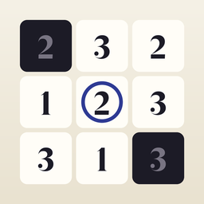

Hitori: Daily Logic Puzzles
Brain Games, Offline, No Ads
A fresh logic puzzle every day. Shade numbers so none repeat, keep the rest connected. Unlimited puzzles, no ads.
Hitori is a pure logic puzzle: shade cells so no number repeats in any row or column. Shaded cells may not touch side by side, and all unshaded cells must stay connected. Every puzzle has exactly one solution and can be solved by logic alone.
What it does
- Unlimited 5×5 and 6×6 puzzles, each with a unique solution
- Daily puzzle: the same 6×6 grid for everyone, every day
- Tap to shade, tap again to circle a cell you know stays white
- Undo
- Optional live highlighting of rule breaks
- Timer and a win screen
- Works fully offline; no ads, no account
Free
- Unlimited 5×5 and 6×6 puzzles and the daily puzzle
PRO (one-time purchase, no subscription, no ads)
- 7×7, 8×8 and 9×9 grids
- Hints that reveal one wrong or open cell
- Statistics: solved count, best times per size, daily streak
- Auto-save of the puzzle in progress
Pro is a single in-app purchase with Family Sharing.
Support
Restoring Pro: open Settings in the app and tap Restore Purchases, signed in with the Apple ID you bought it with. Pro is shared with your family through Family Sharing.
Your data: everything stays on your iPhone. The app has no account and makes no network requests, so there is nothing to sync or delete on a server.
Questions, bugs or ideas: write to boris.stiner@gmail.com. Please mention the app name and your iOS version.
Privacy
This app collects no data. No account, no tracking, no ads, works offline. Read the privacy policy.